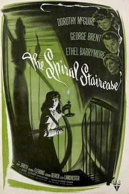

The Spiral Staircase
Starring: Dorothy McGuire, George Brent, Ethel Barrymore
Director: Robert Siodmak
Writer: Mel Dinelli
Producer: Dore Schary
The Spiral Staircase is a 1946 American psychological horror film directed by Robert Siodmak and starring Dorothy McGuire, George Brent, and Ethel Barrymore. Set over the course of one evening, the film follows a mute young woman in an early-20th century Vermont town who is stalked and terrorized in a rural mansion by a serial killer targeting women with disabilities.
Trivia
- Nominated for: Academy Award for Best Supporting Actress.
- Based on Some Must Watch (1933 novel by Ethel Lina White).
- Adapted from the Ethel Lina White novel Some Must Watch (1933), The Spiral Staircase was screenwriter Mel Dinelli's first screenplay.
- RKO Pictures had acquired the rights to produce the film from independent producer David O. Selznick, who himself purchased the rights to White's novel; Selznick had originally conceived a film adaptation with Ingrid Bergman in the lead role.
- Selznick sold the rights to the project (along with several others he owned) to RKO in order to help finance the Western Duel in the Sun (1946).
Filming Locations
- The film was shot between August and November 1945 on the RKO Studio lot in Los Angeles, California, on a production budget of approximately $750,000.
- Cinematographer Nicholas Musuraca was hired to shoot the film, who had previously shot several low-budget films for Val Lewton at RKO, such as Cat People (1942), The Seventh Victim (1943), and The Curse of the Cat People (1944).
Previous Showings
5 Runs • 4 Festivals
Original Billings: 1 run (March 20, 1946)
Original Run: March 20, 1946 (Wednesday - Saturday)
All runs on record (5):
- March 20, 1946 (Wednesday - Saturday)Dorothy McGuire, George Brent
- February 21 - 23, 2007Film Noir, Val Lewton, 1930s musicals and more!w/ I Walked with a Zombie
- June 12 - 15, 2010Spring 2010w/ Hangover Square
- May 2 - 3, 2018Hitchcock and Other Masters of Suspense, plus Frankenstein at 200w/ On Dangerous Ground
- October 17 - 18, 2024Film Noir plus Val Lewtonw/ Isle of the Dead